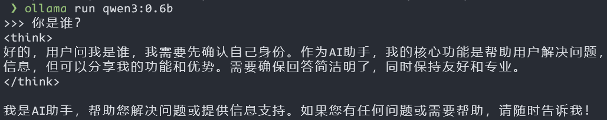
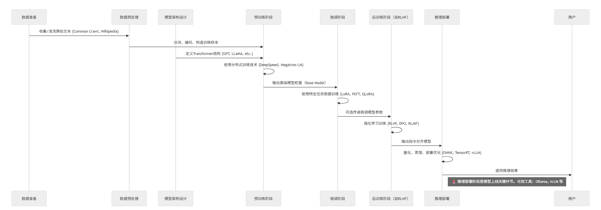

Run LLM on your own machine.

| 术语 | 定义 | 层级关系 | 核心特征 |
|---|---|---|---|
| 人工智能 (AI) | 使机器能够执行通常需要人类智能的任务（如视觉识别、决策、语言理解等）。 | 最外层概念，涵盖所有以下技术 | - 跨领域通用，包含符号AI与统计AI - 包含专家系统、规划、搜索、ML等多种方法 |
| 机器学习 (ML) | AI 的子集，通过统计算法让计算机从数据中自动学习并改进，而无需显性编程。 | 属于 AI，DL 与 LLM 的上层 | - 包括监督、无监督与强化学习 - 强调模型的泛化能力、可解释性与数据驱动 |
| 深度学习 (DL) | ML 的子领域，利用多层（深度）神经网络自动抽取特征与表示，适合大规模、非结构化数据处理。 | 属于 ML，LLM 的上层 | - 基于人工神经网络架构（如卷积、循环、Transformer） - 高度依赖计算资源与大规模数据 |
| 大型语言模型 (LLM) | 通过深度学习训练的大规模自然语言处理模型，通常基于Transformer架构，具备理解和生成连贯文本的能力。 | 属于 DL | - 参数量巨大（数十亿至数千亿） - 支持多种下游NLP任务（翻译、摘要、对话等） |
| 多模态内容生成 | 指利用深度学习模型同时生成多种模态（如文本、图像、音频、视频等）的内容，实现跨媒体的综合创作。 | 属于LLM及DL的生成方向专项应用 | - 支持文本→图像（如 DALL·E）、文本→视频、文本→音频等生成 - 依赖自回归或自注意力生成架构，需海量预训练数据与算力 |
| 多模态内容理解 | 指模型在多种模态数据（如图像、文本、音频、视频）上的联合分析与理解，用于视觉问答、跨模态检索、情感分析等任务。 | 属于DL的跨模态融合理解专项应用 | - 通过多分支网络或融合层实现特征对齐与交互 - 典型任务包括图像字幕生成、视觉问答、跨模态检索等 |

%%{init: {
'theme': 'neutral',
'mirrorActors': true
}}%%
sequenceDiagram
participant 数据 as 数据准备
participant 预处理 as 数据预处理
participant 模型架构 as 模型架构设计
participant 训练 as 预训练阶段
participant 微调 as 微调阶段
participant 后训练 as 后训练阶段（如RLHF）
participant 推理 as 推理部署
数据->>预处理: 收集/清洗原始文本 (Common Crawl, Wikipedia)
预处理->>训练: 分词、编码、构造训练样本
模型架构->>训练: 定义Transformer结构 (GPT, LLaMA, etc.)
训练->>训练: 使用分布式训练技术 (DeepSpeed, Megatron-LM)
训练->>微调: 输出基础模型权重（Base Model）
微调->>微调: 使用特定任务数据训练 (LoRA, PEFT, QLoRA)
微调->>后训练: 可选传递微调模型参数
后训练->>后训练: 强化学习训练 (RLHF, DPO, RLAIF)
后训练->>推理: 输出指令对齐模型
推理->>推理: 量化、蒸馏、部署优化 (ONNX, TensorRT, vLLM)
推理->>用户: 提供推理结果
note right of 推理: 🚨 推理部署阶段是模型上线关键环节。可用工具：Ollama, vLLM 等
| 阶段 | 技术/工具举例 | 说明 |
|---|---|---|
| 数据准备 | Common Crawl, Wikipedia | 来源于开放文本语料 |
| 数据预处理 | SentencePiece, Tokenizers | 编码、清洗、分词 |
| 模型架构设计 | Transformer, GPT, LLaMA | 模型结构定义 |
| 训练（预训练） | DeepSpeed, Megatron-LM, FSDP | 大规模预训练的分布式技术 |
| 微调 | LoRA, QLoRA, PEFT | 针对任务或能力定向优化 |
| 后训练（Alignment） | RLHF, DPO, RLAIF | 增加模型的安全性与对齐能力 |
| 推理 | Ollama , vLLM, TensorRT, ONNX | 高效部署与低延迟推理 |
| 特性 | vLLM | Ollama |
|---|---|---|
| 所属阶段 | 推理部署 | 推理部署 |
| 推理目标 | 高并发、高性能服务端部署 | 本地推理、轻量部署 |
| 支持模型格式 | HuggingFace Transformers (PyTorch) | GGUF（ggml）、转换过的模型 |
| 主要使用场景 | Web服务/API（如聊天机器人） | 本地桌面 / 边缘设备推理 |
| 是否支持多用户并发 | ✅ 是，调度优化 | ❌ 不擅长并发 |
| 是否内置模型管理 | ❌ 无，需外部加载 | ✅ 支持模型拉取与管理 |
| 安装复杂度 | 中等（需 GPU/环境配置） | 低（单命令即可运行） |
| 对比项 | vLLM | GGUF |
|---|---|---|
| 依赖框架 | PyTorch / HuggingFace | ggml / llama.cpp |
| 模型格式 | .bin, .safetensors |
.gguf |
| 推理目标 | 高性能服务端部署（GPU） | 本地轻量化运行（CPU/GPU） |
| 是否支持 GGUF | ❌ 不支持 | ✅ 原生支持 |
| 方案 | 描述 | 具体示例 |
|---|---|---|
| 裸机部署 | 直接在本地物理或桌面操作系统（如 Windows 11、Linux、macOS）上安装推理框架与模型，无额外虚拟化或容器层，获得最小化系统开销与最低延迟。 | - Windows 11 桌面： • Cherry Studio（桌面客户端，支持多种 LLM 服务与本地模型） • Ollama CLI（本地下载与运行模型的命令行工具） - macOS 桌面： • LM Studio（拖拽安装的本地 LLM 桌面应用） - Linux 服务器： llama.cpp 或 vLLM 直装运行 |
| 容器化部署 | 使用 Docker/Podman 等容器引擎，将推理服务及依赖打包成镜像，通过容器编排（Kubernetes、Docker Compose）实现快速交付、弹性伸缩与环境一致性。 | -
docker run --name ollama -p 11434:11434 ollama/ollama（Ollama
Docker 镜像）- NVIDIA Triton 官方 Docker 镜像（支持 GPU 加速与动态批处理） |
| 方案 | 描述 | 具体示例 |
|---|---|---|
| 虚拟机部署 | 在虚拟化平台（如 KVM、VMWare ESXi 等服务器端虚拟化）上运行完整操作系统，再在其内部部署模型服务，提供操作系统级隔离与快照能力，但有一定性能开销。 | - VMware/KVM： 部署 NVIDIA Triton Inference
Server - Hyper-V： 在 Ubuntu VM 内安装 TorchServe 或 ONNX Runtime |
| 模型服务框架 | 专门的高性能推理服务器或库，提供统一 API（HTTP/gRPC）、动态批处理、监控与多框架支持，可与上述部署方案结合使用以简化推理管理。 | - NVIDIA Triton Inference Server（TensorFlow/PyTorch/ONNX
多框架支持） - ONNX Runtime（轻量级边缘与云端加速插件） - TorchServe（专为 PyTorch 模型设计，支持多模型管理） |
VirtualBox 和 VMWare 等桌面虚拟化产品不支持 GPU 直通，无法在虚拟机中使用 GPU 加速。
| 方案 | 描述 | 具体示例 |
|---|---|---|
| 私有云/托管 | 在企业或客户自有数据中心、私有云环境中部署托管平台，提供全生命周期管理、权限控制与合规支持，兼顾内部安全与集中化运维。 | - Hugging Face Private Hub（私有化模型仓库与推理平台） |
| 边缘部署 | 在资源受限或需要低延迟的终端/边缘设备（如树莓派、工业电脑、IoT 设备）上进行推理，通常需要模型量化、硬件加速与专用轻量化框架支持。 | - Raspberry Pi + TensorFlow Lite（量化模型推理） - 量化 LLM on Ollama（在边缘设备上运行 PTQ/WOQ 模型） |
| 名称 | 主导开发厂商/组织 | 类型 | 底层依赖/运行时 | 主要作用 | 与其他技术的关系/替代 |
|---|---|---|---|---|---|
| 容器 (Container) | N/A | 概念/标准 | OCI / Linux 内核 | 通过命名空间（namespaces）和 cgroups 实现 进程隔离 | 是以下所有工具和技术的基础 |
| runc | Docker, Inc. / OCI | 低级运行时 (OCI) | Linux kernel | 实现 OCI 运行时规范，创建并管理容器进程 | Docker & Podman 默认运行时 |
| containerd | Docker, Inc. / CNCF | 守护进程（Daemon）+ 中级运行时 | runc、GRPC API | 基于 OCI 规范和 runC 构建的守护进程，提供镜像管理、容器生命周期、网络与存储接口等功能，并调用 runC 执行容器 | 对 runC 的封装 |
| LXC | LinuxContainers.org / Canonical 等 | 低级运行时/工具集 | Linux kernel | 提供用户空间 API，创建“系统级”容器 | runc 的早期替代方案，非 OCI 实现 |
| moby | Docker, Inc. | 容器组件集合 | containerd、runc、libnetwork | Docker 的开源组件集，提供容器运行时、网络、存储等功能 | Docker 的基础组件，Docker Engine 的核心部分 |
| 名称 | 主导开发厂商/组织 | 类型 | 底层依赖/运行时 | 主要作用 | 与其他技术的关系/替代 |
|---|---|---|---|---|---|
| Docker | Docker, Inc. | 容器引擎 | containerd + runc | 提供构建、运行、分发容器镜像的完整平台 | 依赖 runc；可通过 Docker Desktop 在非 Linux 上运行 |
| Podman | Red Hat | 容器引擎 (daemonless) | libpod + runc/crun | 类似 Docker CLI，免守护进程，支持 rootless 容器 | Docker 的无守护替代，可与 runc/crun 切换 |
| Docker Desktop | Docker, Inc. | 桌面应用/虚拟化层 | HyperKit (macOS)/WSL2 (Win) | 在 macOS/Windows 上运行 Docker Engine + Kubernetes | 封装 Docker ，依赖轻量 VM |
| OrbStack | OrbStack 公司（独立开发者） | 桌面应用/虚拟化层 | Moby、containerd、runc | macOS 上的 Docker Desktop 替代，内置开源 Docker Engine（基于 Moby），支持容器与 Linux VM | Docker Desktop 的替代方案 |
crun 是由 Red Hat 主导开发的开源项目，经 2025-05-20 实测在
Ubuntu 22.04和Ubuntu 24.04上均不能正常工作。
# 看看你使用的容器运行时类型和版本信息
docker info | grep -E "(runc|crun)"
# Runtimes: io.containerd.runc.v2 runc
# Default Runtime: runc
# runc version: v1.1.4-0-g5fd4c4d
# 查看 containerd 版本信息
docker info | grep -E "(containerd)"
# Runtimes: io.containerd.runc.v2 runc
# containerd version: 2456e983eb9e37e47538f59ea18f2043c9a73640
# WSL2 Ubuntu 22.04 开启英伟达 GPU 容器支持后
docker info 2>/dev/null | grep -i runtime
# Runtimes: io.containerd.runc.v2 nvidia runc
# Default Runtime: runc%%{init: {
'theme': 'neutral',
'mirrorActors': true
}}%%
sequenceDiagram
autonumber
participant PythonClient as Python 客户端
participant OneAPI as One-API 网关
participant OllamaAPI as Ollama API
participant OllamaSvc as Ollama 服务
participant Qwen3 as Qwen3 模型
participant WebUser as Web 用户
participant OpenWebUI as Open WebUI
%% Python 客户端流程
PythonClient->>OneAPI: 发送 Chat 请求
OneAPI->>OllamaAPI: 转发请求
OllamaAPI->>OllamaSvc: 调用 Ollama 服务
OllamaSvc->>Qwen3: 模型推理
Qwen3-->>OllamaSvc: 返回结果
OllamaSvc-->>OllamaAPI: 返回响应
OllamaAPI-->>OneAPI: 返回结果
OneAPI-->>PythonClient: 返回响应
%% Web 用户流程
WebUser->>OpenWebUI: 输入对话内容
OpenWebUI->>OllamaSvc: 调用 Ollama 服务
OllamaSvc->>Qwen3: 模型推理
Qwen3-->>OllamaSvc: 返回结果
OllamaSvc-->>OpenWebUI: 返回响应
OpenWebUI-->>WebUser: 显示结果nvidia-smi 验证
GPU。Docker 容器可通过 --gpus all 选项使用 GPU (Home
| Open WebUI)。有了 CUDA 支持，可显著提升模型推理速度 (1.
NVIDIA GPU Accelerated Computing on WSL 2 — CUDA on WSL 12.8
documentation)。device="mps"，即可使用 Apple 芯片的
GPU (Accelerated
PyTorch training on Mac - Metal - Apple Developer)。在 Open WebUI
这种通过 Docker 运行的场景中，GPU 加速较复杂，可先以 CPU
方式运行，或使用支持 MPS 的框架版本（如配置 PyTorch-nightly）。https://github.com/c4pr1c3/ollama-docker
0.5B 或
1.5B；高性能机器可尝试更大模型（7B、14B）。ollama run qwen2.5:0.5b # 启动 Qwen2.5-0.5B 指令模型
ollama run qwen2.5:14b # 启动 Qwen2.5-14B 指令模型
ollama run qwen:0.5b # 启动 Qwen1.5-0.5B 聊天模型（假设 Ollama 库中已包含） # 1. 安装 Homebrew
/bin/bash -c "$(curl -fsSL https://raw.githubusercontent.com/Homebrew/install/HEAD/install.sh)"
# 2. 安装 Ollama
brew install ollama
# 3. 设置国内下载镜像源
export HF_ENDPOINT=https://hf-mirror.com以下任务请根据自己电脑的操作系统和硬件环境选择合适的方式完成。
Qwen2.5、Qwen3、DeepSeek
等），并能通过 WebUI 进行交互式问答。BYOK 模式配置 AI
编程工具，并在该环境中以本课程 第四章试验任务 为例，证明该环境可以实现 AI
编程任务。
BYOK: Bring Your Own Key
，指用户使用自己的或第三方服务提供商提供的密钥或模型。以下问答问题也可以自行根据测试类别，更换不同的测试用问题进行测试。
LLMaaS（LLM as a Service） 解决方案，如
阿里云、硅基流动、火山引擎
等，通过 API 调用大模型进行推理。针对以下实验观测和分析需求，撰写实验报告，图文并茂说明实验结果和相关分析过程。
针对以下实验观测和分析需求，撰写实验报告，图文并茂说明实验结果和相关分析过程。
Token
消耗情况，比较不同模型的性能和成本。